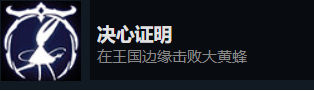
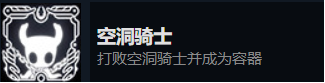
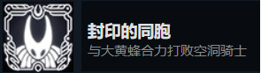

圣巢往事
# 《空洞骑士》简介
《空洞骑士》（英语：Hollow Knight）是一款由Team Cherry制作与发行的动作平台类游戏，2017年2月24日首先于Windows平台发售，之后又推出MacOS、Linux、任天堂Switch、PlayStation 4、Xbox One等版本。游戏的部分开发资金来自于Kickstarter网站的群众募资，直到2014年底募款结束为止累计金额超过5万7千多澳元。
游戏故事讲述一位小骑士所进行的冒险，前往探查一座荒废多时的昆虫王国圣巢（Hallownest）。在旅途中探索未知地区、击败敌人、收集物品&护符、认识各式各样的虫，并解开这座王国隐藏的历史与秘密，并在过程中了解自身的使命，最后成为空洞骑士。 本作是2D横向动作游戏，类银河恶魔城，相对于可爱的画风，其剧情反而较为黑暗，而剧情方面并无直接叙述，需要玩家调查各个NPC以及遍布地图的线索才能窥得一斑。
2019年2月14日，官方宣布将推出续作《空洞骑士：丝绸之歌》（Hollow Knight: Silksong），未来将在Windows、Mac、Linux、Switch平台推出，其他平台则会较慢推出。这次将由《空洞骑士》中的角色“大黄蜂”（Hornet）担任主角，战斗方式异于前作、并包含更多新内容。[3]
# 圣巢地图

# 圣巢往事
《空洞骑士》设定在一个遭到废弃已久的王国－圣巢（Hallownest），游戏主角骑士（The Knight）某天来到了圣巢上方的小镇－德特茅斯（Dirtmouth）并由镇中的一口古老水井下降到王国中。 在这个逐渐衰败的王国中，几乎全部的居民都被一种未知并缓缓散播的疾病感染，丧失了意志并不断的攻击著骑士。 旅途中骑士也遇见了圣巢的保护者大黄蜂（Hornet）阻碍他的前进。随后，三位守梦人（Dreamer）找上了骑士，并希望骑士帮助解除他们从前封印起来的诅咒。 圣巢的历史也渐渐浮现。 游戏设计剧情让玩家从细节中推论，故未必完全准确。
许久之前，一位叫做辐光（The Radiance）的强大神灵统治著虫群，用其能量掌控著所有虫子的意志。在此同时，一个古老强大的种族沃姆（Wyrm）灭绝，但有一只沃姆重生成为了一只新的虫子－白色君王（Pale King）。君王解救了虫群脱离辐光的控制，并建立了伟大的圣巢王国。游戏中散播的疾病便是由被激怒的辐光所创造，试图慢慢毁灭白色君王的王国。君王在试着消灭疾病无效后，发现了一种名为虚空（Void）的物质。君王试图将虚空的能量装进容器内，创造出一个没有感情、纯粹由虚无构成的生物，以用来将辐光的感染容纳在身体里。在无数的失败后，仅有两个虚空生物存活了下来－游戏主角骑士和一位成功达到纯粹虚无的容器－空洞骑士（Hollow Knight）。帝王将搭载着感染的虚空骑士给封印在黑卵神殿内，并由三位梦术士的能量保护着封印。
但是白色君王某天突然失踪（游戏未说明他已去世或逃离圣巢），虚空骑士体内的感染也开始慢慢地突破封印，圣巢也遭到毁灭。主角回想起是自己当初也是一个失败的容器，在被丢弃后成功逃离了困住自己的深渊。梦术士们希望主角能打破封印并杀死空洞骑士，并将感染给包覆在自己体内，成为新一任空洞骑士。大黄蜂却相信以主角强大的战斗能力，说不定两人能够成功的消灭感染的根源－辐光。
# 结局
游戏最后有三种结局：
# 结局一
主角杀死了空洞骑士并将感染封印在自己体内，成为新任虚空骑士。 
# 结局二
主角获得了虚空之心，得到了控制虚空的能量。大黄蜂帮助主角打倒虚空骑士。结尾和结局一相同，只是大黄蜂成为了新任梦术士并且能量被用以封印感染，两人一同被永远困在神殿内。 
# 结局三
主角获得了虚空之心，得到了控制虚空的能量。大黄蜂帮助打倒空洞骑士后主角进入空洞骑士的梦中世界，并挑战辐光。随后，主角解放了虚空的力量并消灭了辐光，自己的身体也毁坏暗示主角回归虚空或死亡。结尾大黄蜂看了一眼主角破碎的面具后黯然离开。